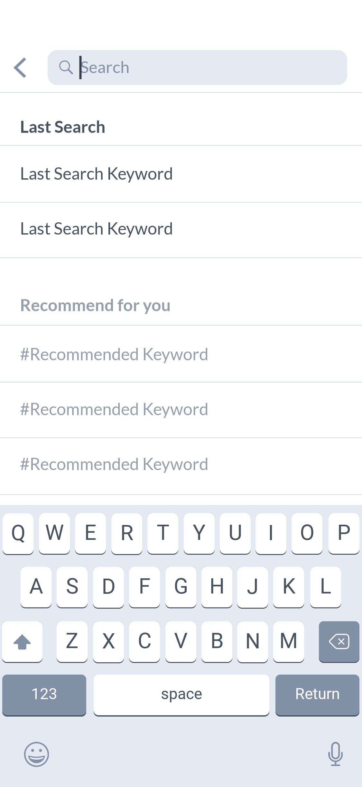
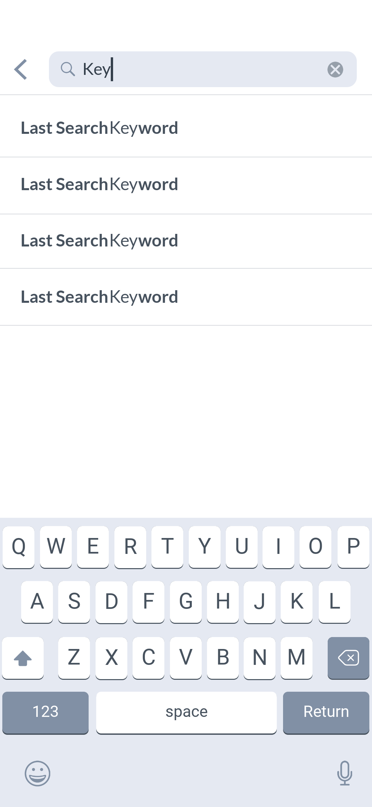
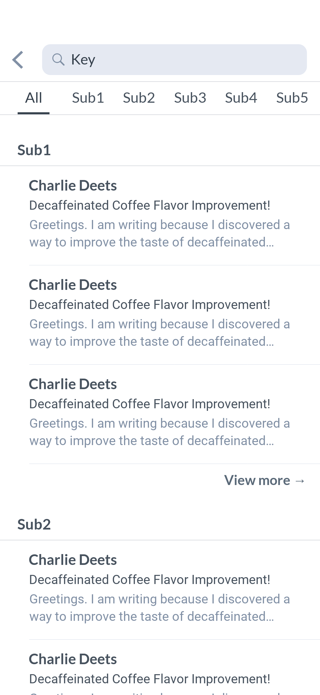
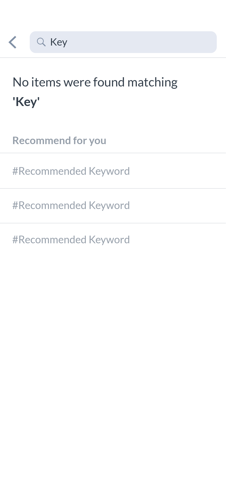

본 기능을 유도하는 버튼은 일반적으로 서비스 홈 또는 검색이 가능한 콘텐츠가 노출된 화면의 상단에 위치해있다.
검색 버튼 선택 시 검색 키워드 입력 페이지(Search page)가 노출되며, 사용자의 최근 검색 키워드나 서비스에서 제공하는 추천 키워드를 노출한다.
키워드 입력 중 입력 중인 키워드를 포함하는 완성 키워드(Completed keywords)를 노출하여 정확한 검색 결과에 빠르게 접근할 수 있도록 한다. 이때 입력 중인 키워드, 즉 사용자가 이미 작성하여 인지한 키워드 외 텍스트를 강조 처리하여 사용자가 원하는 결과값을 빠르게 인지할 수 있도록 한다. 또한 입력된 검색어 한 번에 삭제 버튼을 노출하여 사용자가 잘못 입력된 값을 빠르게 원복할 수 있도록 한다.
이미 사용자가 직접 키워드를 입력하거나 서비스가 제공하는 추천 키워드 혹은 완성 키워드를 선택할 경우 검색 결과 화면(Search results)이 노출된다. 검색 결과 화면에 여러 종류의 결과값이 노출되는 경우, 각 종류의 대표값을 메인 화면에 노출하고 더보기 버튼 혹은 상단 탭으로 각 종류를 분류하여 살펴볼 수 있도록 한다. 검색 키워드 입력 필드를 다시 선택하는 경우, 검색 키워드 입력 페이지가 다시 노출된다.
찾는 검색 값이 없을 경우 검색값 없음 화면(No results found)이 노출되고, 본 페이지에서 유사한 키워드나 서비스 제공 추천 키워드를 노출하여 다른 검색값으로 유도하여 사용자의 이용 흐름이 끊기지 않도록 설계하는 경우도 있다.
소셜 네트워킹, 커뮤니티
Photo & Video사진 및 비디오 캡처, 편집
Food & Drink레시피, 레스토랑 리뷰
Shopping쇼핑, 쿠폰, 상품 리뷰
Productivity작업·일정 관리 등 업무 효율화
News방송 미디어, 뉴스리더
Travel항공권·호텔 예약, 여행 계획 및 정보 찾기
Entertainment영상 콘텐츠, 공연 티켓 발권
Lifestyle부동산, 취미, 인테리어
Health & Fitness운동 추적, 명상, 체중 관리
Business공동 작업 관리, 구직
Finance모바일 뱅킹, 가계부
Education학습, 학교 포털
Weather날씨 예보·특보, 현지 날씨
Music음악 감상, 녹음·연주, 작곡
Books전자책, 인터렉티브 북
Navigation장소 검색, 길찾기